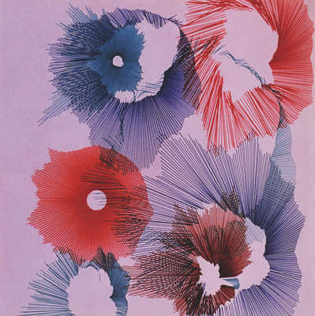

Oeuvre original

Oeuvre réalisée - Methode 1
Oeuvre réalisée - Methode 2
Projet de reflexion d'un code pour reproduire une oeuvre.
Il fallait proposer deux méthodes différentes. La première est une simple incrémentation et la seconde utilise le principe de noise.
Les codes sont basés sur de l'aléatoire, on peut tester différentes configurations, comme la variations de longueur des traits, le nombre de rosaces ou encore la taille.